02/02/2025 — Đôi khi bệnh nhân lại may mắn vì bị ngừng tim
Bản dịch tiếng Việt của bài "Sometimes a patient is fortunate to have a cardiac arrest" – Dr. Smith’s ECG Blog. Giữ nguyên toàn bộ 12 hình ảnh của bản gốc.
Tác giả: Pendell Meyers
Một người đàn ông ở độ tuổi 60 đến khám vì đau ngực cấp.
Đây là điện tâm đồ lúc phân loại (triage) của ông:

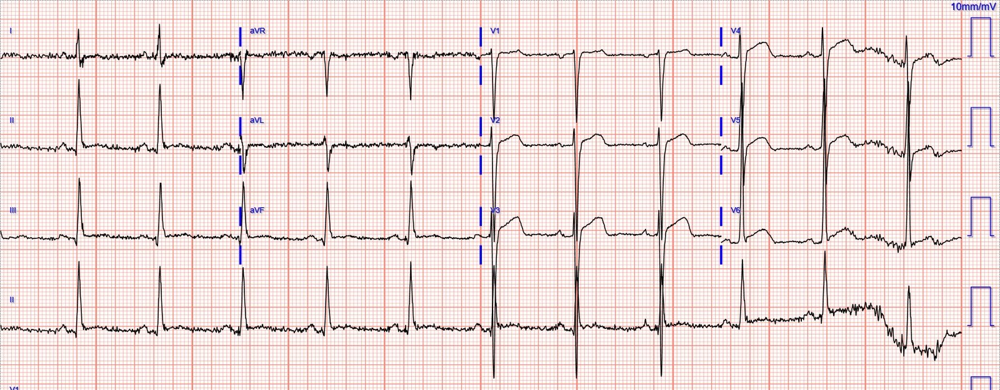
Có nhịp xoang kèm LVH rõ. Các chuyển đạo V5-6 đáng ngờ vì sóng T dương, to, có thể không tương xứng với phức bộ QRS, nhất là V6. Nhưng khi không có điện tâm đồ nền để so sánh, tôi khó có thể nói rằng hình ảnh này đặc hiệu và có giá trị chẩn đoán OMI. Queen of Hearts cũng đồng ý, đánh giá điện tâm đồ này là không đặc hiệu cho OMI.
Bình luận của Smith: V6 rất không điển hình cho LVH và rất đáng ngờ OMI. Có sóng R điện thế rất cao mà không có bất kỳ sóng S nào (biến dạng phần cuối QRS) và có đoạn ST cùng sóng T đồng hướng, với đoạn ST dạng lồi. Điều thiết yếu là phải so sánh với các điện tâm đồ cũ. Nếu không có điện tâm đồ cũ, phải ghi các điện tâm đồ liên tiếp mỗi 15 phút.
Ông có một số điện tâm đồ cũ hơn trong hồ sơ, đây là hai ví dụ:
6 ngày trước đó:

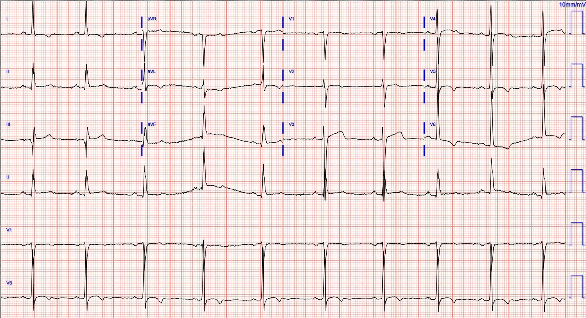
2 tháng trước đó:

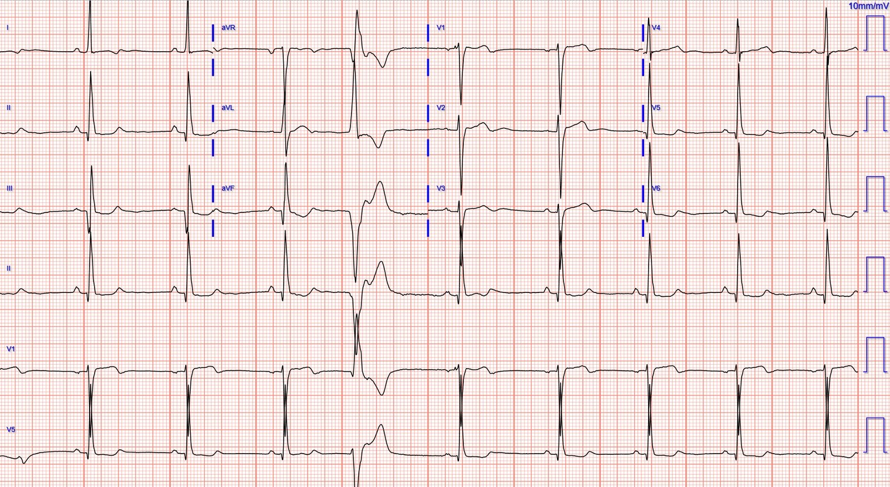
Trong bối cảnh có triệu chứng hội chứng vành cấp (ACS), và khi có thể so sánh điện tâm đồ mới với điện tâm đồ cũ, điện tâm đồ trên cùng CÓ GIÁ TRỊ CHẨN ĐOÁN OMI cho đến khi chứng minh được điều ngược lại.
Đáng tiếc, điện tâm đồ này được đọc là không thay đổi đáng kể so với trước, “không có STEMI”!!
Ông bị đưa trở lại phòng chờ, nơi ông bị ngừng tim do rung thất (VF). Đã tiến hành khử rung, và đạt được tái lập tuần hoàn tự nhiên (ROSC).
Khoảng 5 phút sau ROSC, ghi được điện tâm đồ này (khoảng 45 phút sau khi đến viện):

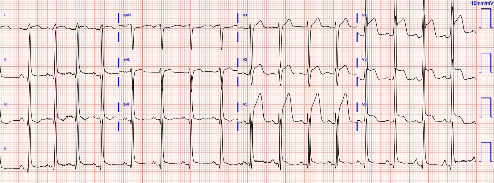
OMI trước bên rõ ràng, và dương tính theo tiêu chuẩn STEMI đối với những ai quan tâm hoặc cần đến nó.
Bình luận của Smith: Bệnh nhân này đã may mắn vì bị ngừng tim. Nếu không bị ngừng tim, ông sẽ ngồi trong phòng chờ cho đến khi toàn bộ vùng cơ tim nguy cơ bị nhồi máu. Nhờ trải qua một cơn ngừng tim, nhân viên y tế mới nhận ra OMI của ông vốn đã không được phát hiện trên điện tâm đồ có giá trị chẩn đoán, và nhờ vậy ông có cơ hội được cứu vớt một phần cơ tim.
Ngoài ra: hãy để ý tắc LAD làm GIẢM biên độ sóng S ở V2 và V3 như thế nào so với các điện tâm đồ trước đó. Tôi nhận thấy điều này gần như luôn xảy ra, và đó là lý do bạn hiếm khi gặp một điện tâm đồ cho thấy CẢ LVH với biên độ cao ở các chuyển đạo trước tim phải LẪN STEMI/OMI cấp.
Phát hiện tắc hoàn toàn LAD đoạn gần và đã đặt stent khi chụp mạch vành ngay sau điện tâm đồ ở trên. Dưới đây là một số hình ảnh:

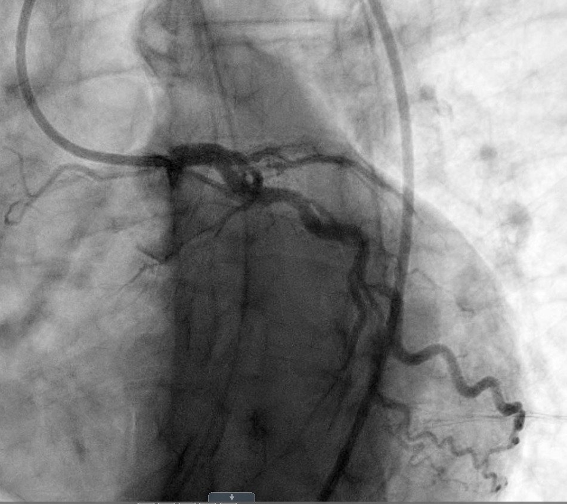

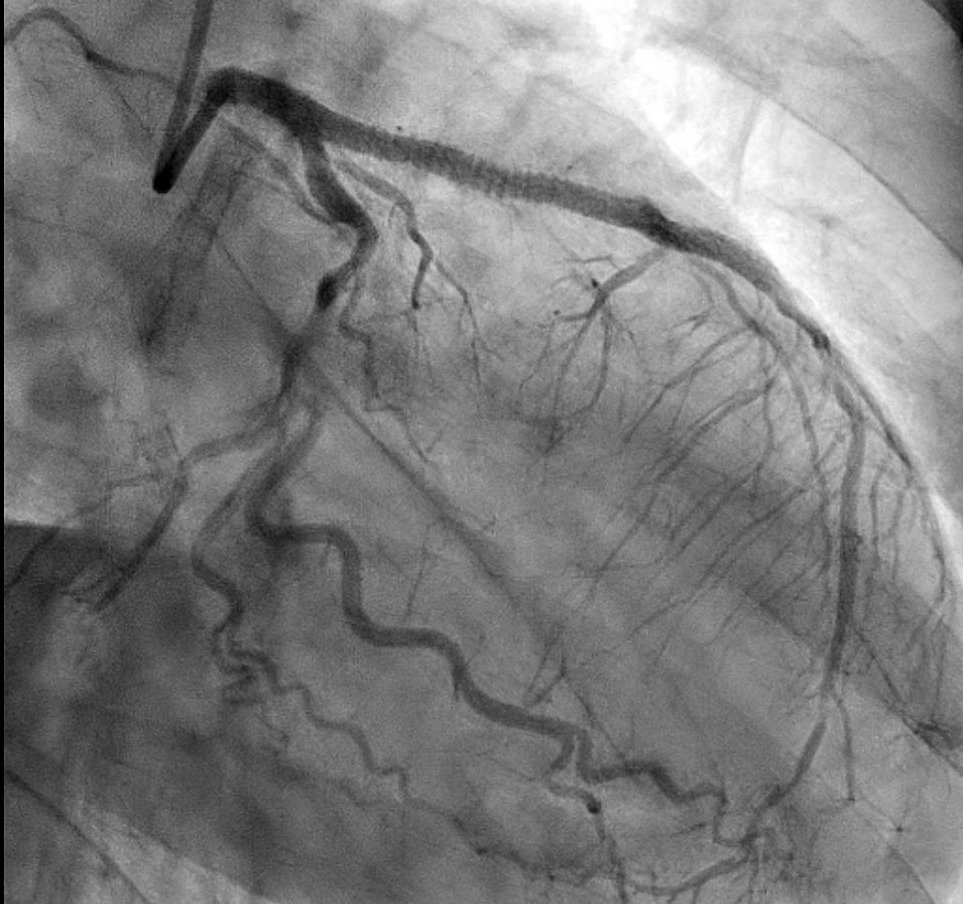

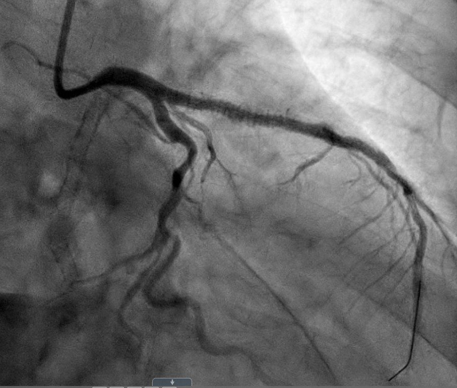
Điện tâm đồ sáng hôm sau:

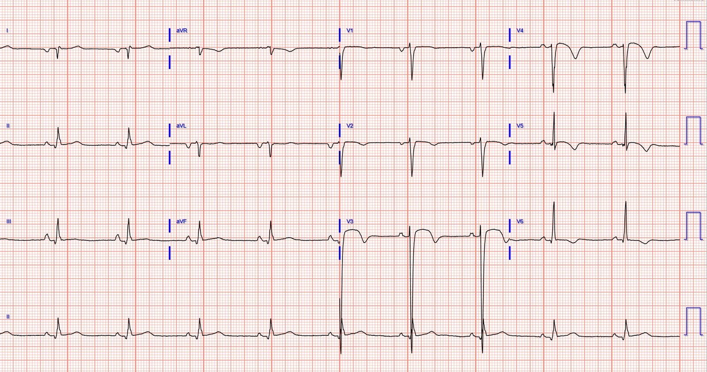
Siêu âm tim:
EF 15%
Giảm động toàn bộ mức độ nặng
Vô động cơ tim thành dưới và dưới vách đoạn đáy-giữa
Giảm động nặng đến vô động cơ tim vùng trước vách, thành trước và dưới vách ở mỏm
Siêu âm tim 3 tháng trước cho thấy EF 40% với giảm động nhẹ toàn bộ, không có rối loạn vận động thành khu trú.
Bình luận của Smith: siêu âm tim ban đầu xấu đến vậy là vì ngay cả phần cơ tim đã được cứu vớt cũng bị “choáng” (stunned) và cần thời gian để hồi phục chức năng. Vài tuần sau, EF cải thiện từ 15% lên 40%. Nếu bệnh nhân này không bị rung thất và do đó không có thời gian từ cửa đến bóng (door to balloon) tương đối ngắn, thì toàn bộ phần cơ tim bị choáng đó lẽ ra đã bị nhồi máu vĩnh viễn, với EF 15% vĩnh viễn.
Troponin I nhanh chóng vượt quá giới hạn báo cáo của phòng xét nghiệm là 25,000 ng/L.
4 ngày sau:

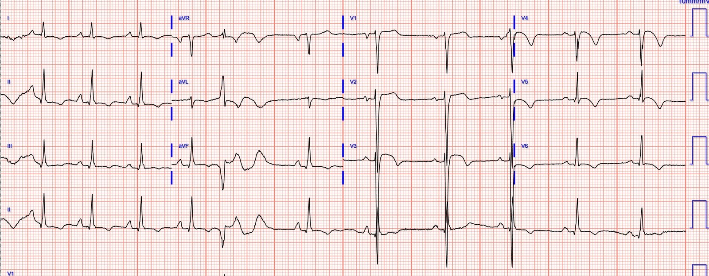
Ông được xuất viện về nhà, nhưng nhanh chóng quay lại viện 4 lần trong vài tháng tiếp theo vì suy tim nặng lên. Không có thông tin về kết cục dài hạn.

===================================
BÌNH LUẬN CỦA TÔI, bởi KEN GRAUER, MD (2/2/2025):
===================================
Chúng ta cần học hỏi từ những ca như ca hôm nay. Điện tâm đồ ban đầu hôm nay không phải là một bản ghi dễ đọc. Đó là vì (như BS. Meyers đã nêu) — có LVH rõ ràng làm phức tạp việc đánh giá các bất thường ST-T cấp tính có thể có.
- Xin nhấn mạnh: Một lần nữa — bệnh sử là MẤU CHỐT. Bệnh nhân này là một người đàn ông ở độ tuổi 60 đến khoa cấp cứu (ED) vì đau ngực (CP) mới xuất hiện. Do đó — ngay cả khi chưa nhìn điện tâm đồ ban đầu, “tư duy” của chúng ta phải-là nhận thức rằng chỉ riêng bệnh sử này đã xếp bệnh nhân vào nhóm nguy cơ cao hơn có biến cố tim cấp.
- Do đó — “tư duy” của chúng ta phải-là cần loại trừ một biến cố cấp, chứ không phải theo chiều ngược lại. Điều này có nghĩa là nếu có bất kỳ sự không chắc chắn nào về chẩn đoán (hoặc về điện tâm đồ ban đầu) — thì chúng ta cần “đào sâu thêm” cho đến khi đạt được sự chắc chắn hơn trong chẩn đoán. Đáng tiếc, điều này đã không được thực hiện trong ca hôm nay. Tôi nói vậy — vì so với điện tâm đồ ghi chỉ 6 ngày trước đó — rõ ràng đã có thay đổi ST-T đáng kể, mà ở bệnh nhân đến khoa cấp cứu vì đau ngực mới xuất hiện này — phải-được nhận ra là OMI cấp cho đến khi chứng minh được điều ngược lại (Xem Hình 1 bên dưới — trong đó tôi đặt 2 bản ghi đầu tiên của ca hôm nay cạnh nhau).
Những sơ suất là gì?
Theo kinh nghiệm của tôi — nhiều (nếu không muốn nói là phần lớn) bác sĩ lâm sàng không so sánh các điện tâm đồ liên tiếp bằng cách đặt cạnh nhau cả hai điện tâm đồ mà họ đang xem.
- Tôi hoàn toàn thừa nhận rằng tôi bỏ sót những dấu hiệu quan trọng khi không làm điều này. Tôi biết điều này đã không được làm trong ca hôm nay — vì nếu đã thực hiện so sánh cạnh nhau — thì khác biệt về hình dạng ST-T giữa các chuyển đạo V4,V5,V6 ở điện tâm đồ #1 và điện tâm đồ #2 đã không thể bị bỏ qua.
- Chúng tôi đã nhiều lần nhận xét về thách thức mà LVH có thể gây ra trong việc nhận biết các thay đổi thiếu máu cục bộ cấp. Đó là vì “tăng gánh” thất trái thường biểu hiện bằng đoạn ST thẳng đuỗn và chênh lên ở các chuyển đạo trước tim có sóng S sâu do LVH rõ rệt. Ví dụ, nếu là một dấu hiệu đơn lẻ — tôi không nhất thiết đọc hình ảnh ST thẳng đuỗn và chênh lên mà ta thấy ở các chuyển đạo V2,V3 của điện tâm đồ #1 (khoanh viền ĐỎ và XANH nhạt) là bất thường ở một bệnh nhân có LVH rõ rệt.
- Thách thức khác mà điện tâm đồ của bệnh nhân LVH rõ rệt kèm “tăng gánh” đặt ra — là phân biệt giữa ST-T đảo ngược ở một hoặc nhiều chuyển đạo bên chỉ do LVH — với ST-T đảo ngược do thiếu máu cục bộ cấp hoặc nhồi máu. Việc phân biệt này còn phức tạp hơn vì LVH rõ rệt đôi khi có thể che lấp các thay đổi ST-T của thiếu máu cục bộ cấp. Dù vậy — ST-T chênh xuống không đối xứng ở chuyển đạo V6 của điện tâm đồ #2 là hình ảnh điện tâm đồ kinh điển của “tăng gánh” thất trái. Nhưng 6 ngày sau (tức là, khi điện tâm đồ #1 được ghi) — thậm chí không có lấy một dấu hiệu gợi ý ST dẹt hay chênh xuống ở các chuyển đạo V4,V5,V6. Điều này có nghĩa là hình dạng ST-T ở điện tâm đồ #1 rõ ràng thể hiện một thay đổi cấp tính (so với điện tâm đồ #2) mà lẽ ra đã không bị bỏ sót nếu có so sánh từng chuyển đạo một giữa 2 bản ghi này.

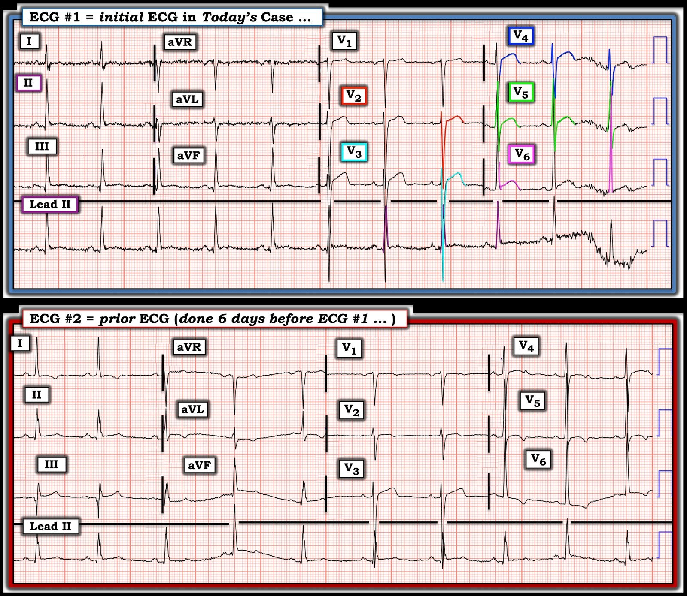
Làm thế nào để nhớ các dấu hiệu điện tâm đồ của LVH và “tăng gánh” thất trái?
Có hơn 50 tiêu chuẩn trong y văn để chẩn đoán LVH trên điện tâm đồ. Và — hình dạng ST-T của “tăng gánh” thất trái và “tương đương tăng gánh” (Strain Equivalents) mang tính chủ quan, và có thể gây nhầm lẫn.
- Để giúp nhớ lại các khái niệm này — Chúng tôi đã tiện thêm một đường link trong menu ở đầu mọi trang của Dr. Smith’s ECG Blog, dẫn bạn tới bình luận của tôi trong bài đăng ngày 20 tháng Sáu năm 2020, trong đó tôi điểm lại một cách tiếp cận dễ dùng để nhận biết LVH và “tăng gánh” trên điện tâm đồ (Xem Hình 2).

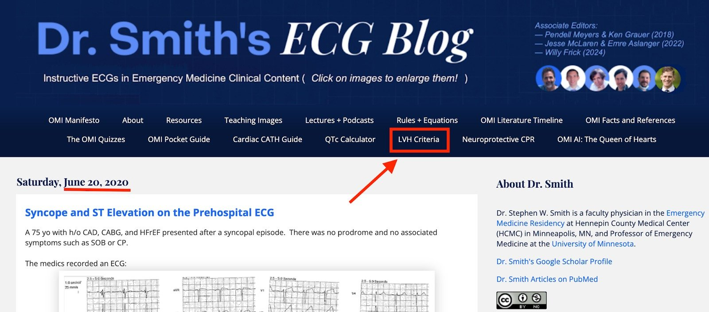
VẬY TẠI SAO điện tâm đồ ban đầu hôm nay lại khó đọc đến vậy?
Dù đã nói như trên — tôi vẫn thấy điện tâm đồ hôm nay cực kỳ khó đọc vì một lý do đơn giản là có sự chồng lấp rõ rệt giữa các phức bộ QRS ở hầu như tất cả các chuyển đạo ngực.
- Thú nhận: Tôi đã mất hơn nửa giờ nhìn chăm chú vào các phức bộ QRS ở từng chuyển đạo ngực, cố gắng phân biệt giới hạn của sóng R với sóng S chồng lấp lên. Tôi vẫn không chắc rằng việc tô màu của tôi trong Hình 1 là hoàn toàn chính xác.
- Điểm MẤU CHỐT: Trong khi đoạn ST thẳng đuỗn và chênh lên mà ta thấy ở các chuyển đạo V2 và V3 của điện tâm đồ #1 không nhất thiết trông bất thường (vì như đã nêu ở trên — “tăng gánh” thất trái do LVH rõ rệt có thể cho hình dạng ST-T này ở các chuyển đạo trước tim) — điều đó lại không đúng với các chuyển đạo V4,V5,V6.
- Chuyển đạo V4 ở điện tâm đồ #1 (khoanh viền XANH đậm) — có sóng S chỉ sâu 13 mm. Chẳng phải đoạn ST dạng vòm và chênh lên ở chuyển đạo này trông không tương xứng và bất thường sao?
- Như đã nêu ở trên — “tăng gánh” thất trái biểu hiện bằng ST-T chênh xuống ở các chuyển đạo bên (hoặc ít nhất là ST-T dẹt). “Tăng gánh” thất trái không biểu hiện bằng đoạn ST dạng vòm và chênh lên, như ta thấy ở chuyển đạo V5 và đặc biệt ở chuyển đạo V6 của điện tâm đồ #1.
Lẽ ra có thể làm gì để giúp việc đọc dễ hơn?
- Thay vì chuẩn bình thường — tôi sẽ ghi lại ngay điện tâm đồ ban đầu hôm nay ở điện thế nửa chuẩn. Làm như vậy sẽ giảm thiểu sự chồng lấp — và giúp nhận ra tính không tương xứng nhờ làm rõ kích thước tương đối của phức bộ QRS và sóng ST-T.